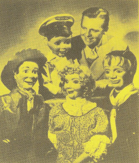
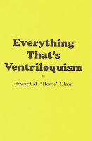

Manipulation of the Figure
5/9/2010
{kind=link}

From Everything That's Ventriloquism*
By Howard M. "Howie" Olson
When operating a figure, the average person tends to move him too much without any reason. You should never use a movement unless it has purpose in the dialogue. Avoid using the same movement too often. It will become boring and distracting.
When an audience sees your act for the first time, they have many things to watch and listen to. You should always look intently at your figure when it is talking so as to cause the audience to watch it rather than you. Look away from the figure to the audience when you are talking and exaggerate your own mouth movement so that it will show a large contrast. The best way to study figure manipulation is to observe children from eight to twelve years of age when they are conversing. The slightest tilt of the head can change expression and meaning. Bending the head down toward the chest shows deep thought, sadness, or many other moods that the dialogue may contain. Raising the head toward the ceiling helps give the opposite mood, like happiness. A slight tilt to the right or left can produce a look of cuteness or cleverness.
Never move the head in an unnatural way. This destroys the illusion. If you work a figure on your arm or knee, a little bounce can be used to good results. If the stick is attached to the body with a spring, you can bounce the figure easily, while working him on a stand or stool. The bounce effect helps show happiness, laughter or any mood where a boy might bounce up and down, like impatience or enthusiasm. You will be better able to understand t
* * * * * *
By Howard M. "Howie" Olson
When operating a figure, the average person tends to move him too much without any reason. You should never use a movement unless it has purpose in the dialogue. Avoid using the same movement too often. It will become boring and distracting.
When an audience sees your act for the first time, they have many things to watch and listen to. You should always look intently at your figure when it is talking so as to cause the audience to watch it rather than you. Look away from the figure to the audience when you are talking and exaggerate your own mouth movement so that it will show a large contrast. The best way to study figure manipulation is to observe children from eight to twelve years of age when they are conversing. The slightest tilt of the head can change expression and meaning. Bending the head down toward the chest shows deep thought, sadness, or many other moods that the dialogue may contain. Raising the head toward the ceiling helps give the opposite mood, like happiness. A slight tilt to the right or left can produce a look of cuteness or cleverness.
Never move the head in an unnatural way. This destroys the illusion. If you work a figure on your arm or knee, a little bounce can be used to good results. If the stick is attached to the body with a spring, you can bounce the figure easily, while working him on a stand or stool. The bounce effect helps show happiness, laughter or any mood where a boy might bounce up and down, like impatience or enthusiasm. You will be better able to understand t
{kind=link}

he movement of the figure after much practice and observation.* * * * * *
*Published by OO-LA-LA,INK copyright 1993. Thanks to M. A. Denemark, we have a new copy of Everything That's Ventriloquism to give away today. The winner is: George Shanthakumar
Contact Mr. D to claim your prize.
Contact Mr. D to claim your prize.